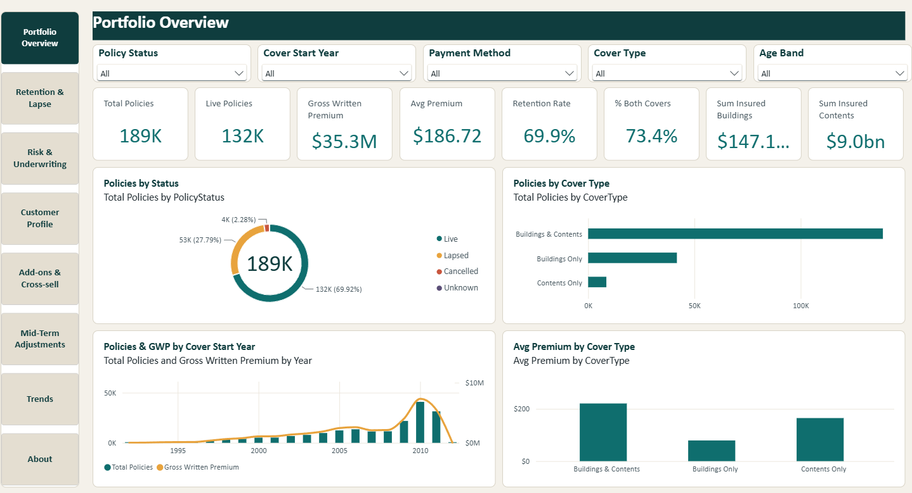
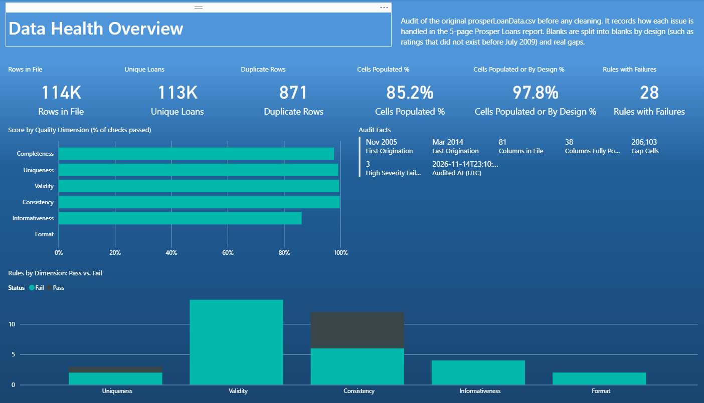
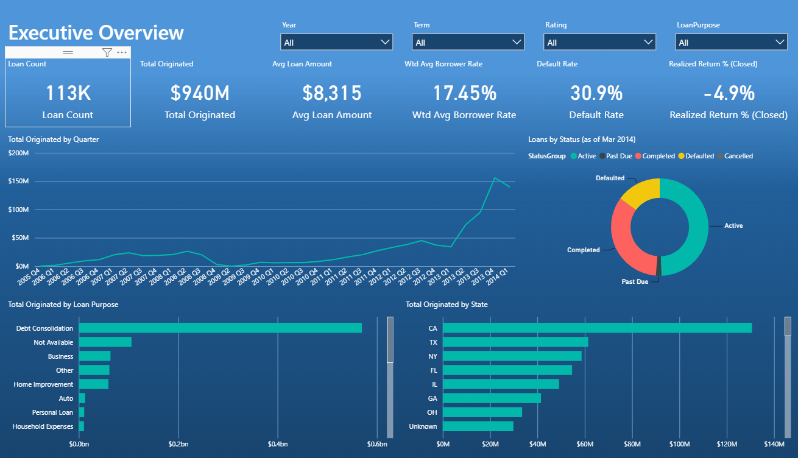

01 / Flagship
Insurance Portfolio Analytics
Policy performance, underwriting risk, customer profiles and cross-selling.
Launch Interactive Report ↗View case study →7+ years of professional experience developing enterprise reporting, analytical data models and interactive business intelligence solutions.
Explore my projectsConnect on LinkedIn
Policy performance, underwriting risk, customer profiles and cross-selling.
Launch Interactive Report ↗View case study →
Assess source data quality and distinguish legitimate missing values from defects.
Launch Interactive Report ↗View case study →
Explore loan origination, borrower risk, defaults and investor returns.
Launch Interactive Report ↗View case study →Business objective: provide a consolidated view of insurance portfolio performance and customer characteristics.
Launch Interactive Report ↗Portfolio overview, retention and lapse, risk and underwriting, customer profile, add-ons, mid-term adjustments and trends.
FactPolicy and FactPolicyAddon with supporting dimensions. Cover start date is the active date relationship; quote date and mid-term adjustment date are inactive alternatives.
Designed the Power BI semantic model, configured relationships, wrote DAX measures and developed report pages. AI assisted with source table construction, unfamiliar business terminology and visual styling.
Insurance business definitions and KPI reconciliation are pending further review.
The model separates policy-level reporting from add-on analysis. The add-on query expands seven pre/post-renewal attribute pairs per source policy row, allowing add-on movement to be analyzed by category without summing policy premiums at the add-on grain.
Cover start date is active; quote and mid-term adjustment dates are inactive alternatives. Diagram shows connectivity, not cardinality labels.
Activates the quote-date relationship within this calculation, rather than changing the default reporting date for the whole model.
Policies by Quote Date = CALCULATE ( [Total Policies], USERELATIONSHIP ( FactPolicy[QuoteDateKey], DimDate[DateKey] ) )Compares policy counts with the previous year. The referenced Policies PY measure uses SAMEPERIODLASTYEAR.
Policies YoY % = DIVIDE ( [Total Policies] - [Policies PY], [Policies PY] )Uses ALLSELECTED to calculate the selected-context denominator for portfolio share analysis.
% of Total Policies = DIVIDE ( [Total Policies], CALCULATE ( [Total Policies], ALLSELECTED () ) )Which customer segments exhibit different policy statuses? How does policy volume change by quote or cover start date? Which add-on categories are kept, dropped or added at renewal?
Planned checks include reconciling source policy counts and premiums, testing key uniqueness and unmatched dates, checking status denominators and verifying add-on rates under single and multiple category selections. These checks are not represented as completed tests.
Business objective: assess whether lending source data is suitable for reliable analytical reporting.
Launch Interactive Report ↗Data health overview, quality rules, completeness by column and completeness by year.
The source uses different rating systems before and after July 2009. Certain newer rating fields are legitimately absent in earlier records. The audit distinguishes these expected gaps from potential defects.
One active relationship: Dimension[Dimension] to HealthRules[dimension]. The three lower tables are disconnected audit summaries, not a conventional star schema. Measures table omitted.
Counts rule records flagged Fail; this is a rule count, not a count of unique affected loans.
Rules with Failures = CALCULATE ( COUNTROWS ( HealthRules ), HealthRules[Status] = "Fail" )Uses a variable and DIVIDE to express unexpected blanks relative to the file row count for a field.
% Gap = VAR b = SUM ( HealthColumns[blank_gap] )
RETURN IF ( b > 0, DIVIDE ( b, [Rows in File] ) )Uses SELECTEDVALUE to select the scoring logic; completeness uses the adjusted population metric, other dimensions use the share of rule checks that pass.
Dimension Score = VAR d = SELECTEDVALUE ( 'Dimension'[Dimension] )
VAR rowsScope = [Rows in Scope]
RETURN
IF ( d = "Completeness", [Cells Populated or By Design %], IF ( rowsScope > 0, 1 - DIVIDE ( [Failing Rows], rowsScope ) ) )Power Query imports JSON audit summaries at file, column, rule and year/field levels. HealthRules adds severity sorting and a pass/fail status based on rows_failing. The Dimension table defines six quality dimensions: completeness, uniqueness, validity, consistency, informativeness and format.
Which fields contain genuine gaps? Which high-severity rules fail? How does field availability vary by origination year?
Proposed checks: reconcile raw row and column counts, verify duplicate keys and expected-blank conditions, recalculate representative rule results and test dimension filters. These checks have not been independently executed.
Business objective: explore historical peer-to-peer lending performance from November 2005 through March 2014.
Launch Interactive Report ↗Executive overview, loan volume and growth, risk and defaults, borrower profile and investor returns.
The model includes origination and closed-date relationships, plus status, rating, listing category and income dimensions. The documented default rate uses closed loans as its denominator rather than all loans.
Five active relationships; Date also has an inactive relationship to Loans[ClosedDate] (dashed line). Default date is LoanOriginationDate. Measures table omitted.
SUMX weights each loan rate by its original principal; DIVIDE normalizes by total originated principal.
Wtd Avg Borrower Rate = DIVIDE ( SUMX ( Loans, Loans[BorrowerRate] * Loans[LoanOriginalAmount] ), [Total Originated] )USERELATIONSHIP switches this measure to the inactive closed-date relationship while retaining the default origination relationship for other measures.
Defaults by Close Date = CALCULATE ( [Defaulted Loans], USERELATIONSHIP ( Loans[ClosedDate], 'Date'[Date] ) )Restricts numerator and denominator to closed loans; computes net investor income relative to original principal, not an annualized return.
Realized Return % (Closed) = DIVIDE (
CALCULATE ( [Net Investor Income], LoanStatus[IsClosed] = TRUE () ),
CALCULATE ( [Total Originated], LoanStatus[IsClosed] = TRUE () )
)How do origination volumes change over time? Which rating or income segments show different default rates? How do weighted borrower rates and realized returns vary across loan segments?
Proposed checks: reconcile unique loan keys with the companion audit, verify status mappings and date coverage, independently calculate weighted rates and closed-loan returns, and test filters and zero denominators. These checks have not been independently executed.
Project screenshots are static previews; launch the interactive reports to explore the data. Independent technical validation remains pending.
Power BI, DAX, Power Query, SQL, T-SQL, Snowflake, Tableau, SSRS, semantic modeling, dimensional modeling, KPI design and enterprise reporting.
Data governance, dbt, Azure Data Factory, SSIS, Microsoft Fabric, ETL/ELT, GitHub, Azure DevOps and Jira.
My professional experience includes financial services, accounting, compliance, operational and executive reporting. I focus on structured troubleshooting, query optimization, reliable analytical models and clear communication of business insights.
Based in Dallas–Fort Worth, with a preference for remote opportunities.